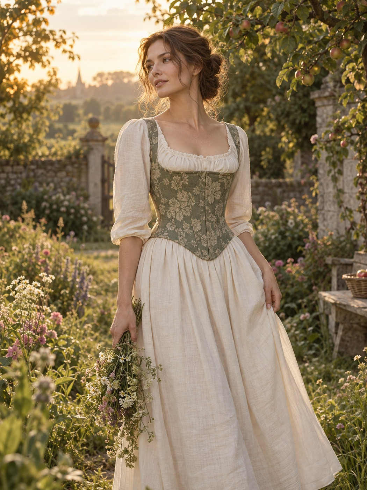
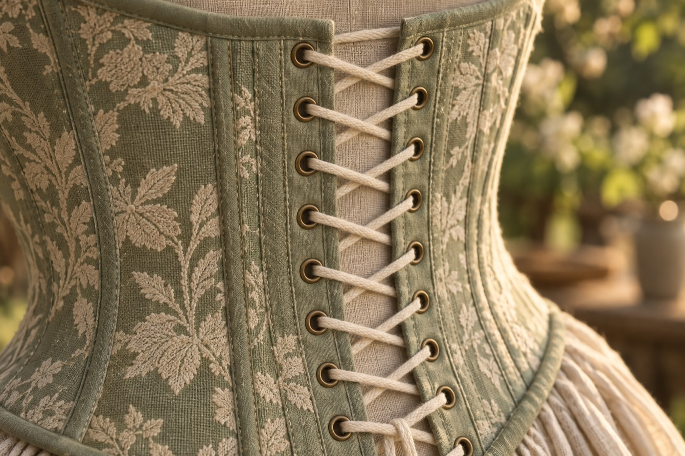
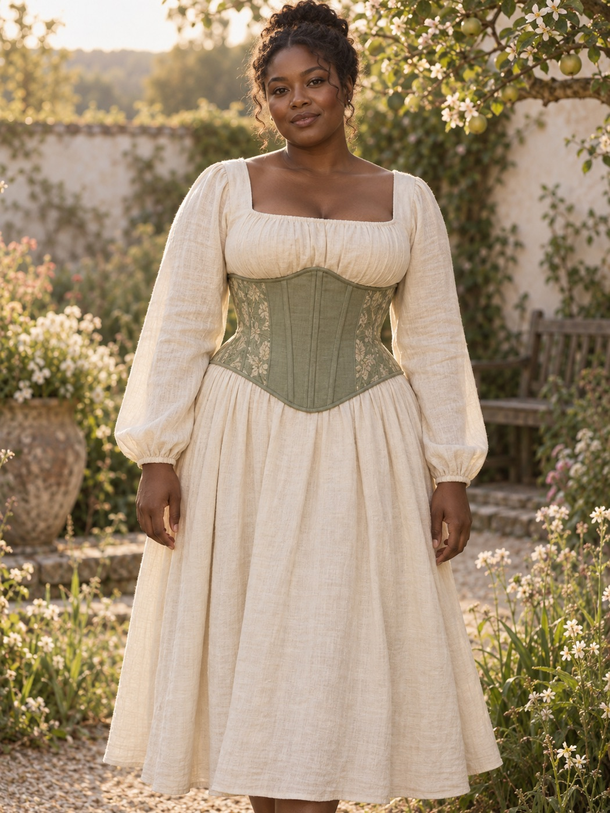
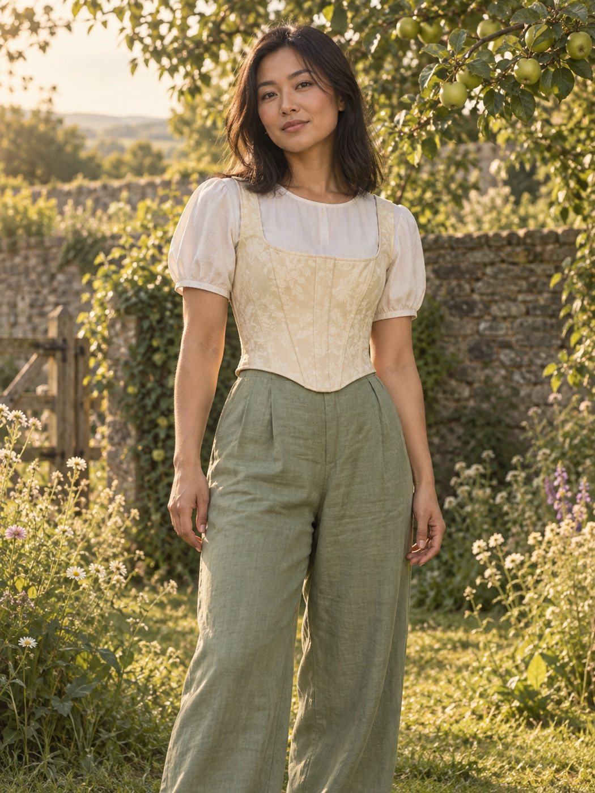
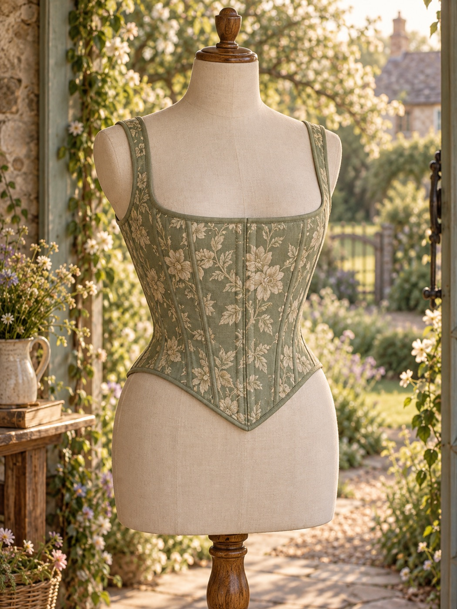

The Hedgerow Post
One letter a month: new linens, workroom notes, how to season and mend. Never more.
We cut each pair of Vesna stays from linen and cotton coutil, bone them in sprung steel, and finish every eyelet edge by hand in a small workroom with the window open. Nothing is hurried. They are made to be laced on a Tuesday, not saved for a ball — though they'll do for that, too.


the Elinor, in meadow jacquard — three summers old & softer every year
No warehouse, no seasons. When you order, we cut. Allow three weeks — we'll write when the binding goes on.

16 spiral steel bones · sage linen, embroidered panels, coutil core · 2" reduction

10 flat + 8 spiral bones · cream cotton damask, linen lining · 2" reduction

24 spiral steel bones · meadow jacquard over cotton coutil · 3" reduction
12 spiral steel bones · sage linen twill, cotton lawn lining · 2" reduction
26 spiral steel bones · sage jacquard, double coutil · 4" reduction
Corsets are sized by their closed waist in inches, not by dress size. Tell us two measurements and how you mean to wear them; we'll do the arithmetic our cutter does.
eleven stitches to the inch — yes, we count
Spiral steel at the curves so you can bend and breathe; flat steel beside the eyelets so the lacing stays true. Every tip dipped and capped.
A sprung steel front busk with brass-finished loops. On and off in seconds, without unlacing the back.
A cotton twill tape sewn through every seam at the waist. It takes the strain so the cloth never has to.
Linen or cotton outside, herringbone coutil for strength, a soft cotton lawn lining against the skin. No polyester, anywhere.
Binding felled by hand, eyelets set one at a time, threads buried. About nine hours, a pot of tea, one pair of hands.
I wore the Marianne to a friend's orchard wedding and then, honestly, to the shops on Monday. The fit finder put me in a 26 and the gap was exactly what it said it would be.
My first corset that isn't a costume. The linen breathes at the faire in August, the bones never dig, and there was a handwritten card with the name of the woman who bound it.
Plus-size and long-waisted, I'd given up. The Netherfield actually covers my hip. I asked for a swap from 36 to 34 after a fortnight — free, and with a kind note.
Twelve measurements, a calico toile posted to your door, and a pattern drafted for one person only. Choose your linen, your ribbon, your thread. From €290, in about six weeks — and the pattern is kept on file under your name for next time.
Begin a letterOne letter a month: new linens, workroom notes, how to season and mend. Never more.